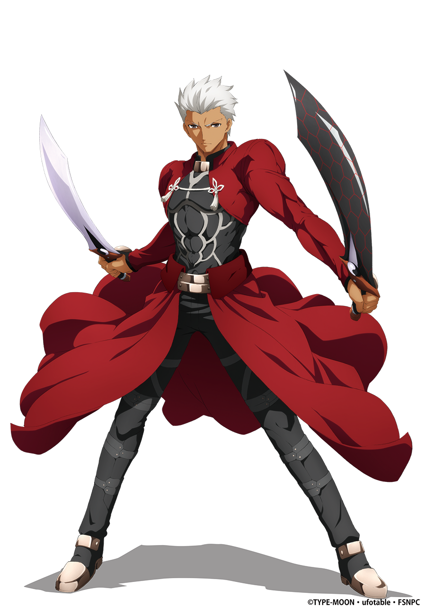

Saber (セイバー, Seiba)
Saber est la Servant de Shirō. C'est une jeune femme, épéiste de très haut niveau, très loyale, peu loquace mais indépendante d'esprit. D'apparence froide mais visiblement pas de glace intérieurement, elle considère le comportement presque suicidaire et tout à la fois trop défensif de Shirō comme nuisible à la bonne réussite de leur but commun (bien qu'à des fins différentes), l'obtention du Graal.
Saber se considère comme le bras armé de Shirō, mais à son grand mécontentement, celui-ci ne veut pas préserver sa vie et l'empêche toujours de remplir ce qu'elle estime être son rôle. De fait, Saber va jusqu'à désobéir à Shirō en attaquant le temple de sa propre volonté, puis en tentant de tuer un ennemi, Shirō utilisant alors à sa plus grande surprise l'un de ses sceaux de commandement.
Celle-ci semble toutefois se laisser séduire par Shirō, première personne à la considérer comme femme. À contrario, elle repousse violemment Gilgamesh.
Saber, possesseur d'Excalibur et d'Avalon, n'est autre qu'Arturia Pendragon, autrement connue sous le nom du Roi Arthur14 ou le Roi des chevaliers (en cachant son genre). Sélectionnée pour avoir arraché l'épée de la pierre, elle se dévoua à son peuple et combattit pour lui autant qu'elle pu. Mais son peuple ne la voyant pas vieillir (du fait d'Avalon) et la voyant toujours de marbre (pour se protéger) considéra qu'elle ne pouvait pas les comprendre et son fils, Mordred, lui déroba Avalon avant la bataille de Camlann.
Persuadée d'avoir été un mauvais roi, elle souhaita qu'un autre roi ait été choisi à l'époque de la sélection, mourut en demandant à Bédivère de jeter Excalibur dans un lac. Elle désire donc le Graal pour revenir en arrière, au moment de la sélection, et que celle-ci se passe autrement.
Toutefois, Shirō, dans Fate, parvient à lui faire comprendre qu'il ne faut pas regarder en arrière, que cela a servi de force pour le présent, qu'il ne faut rien regretter et qu'il faut penser à demain.
Son Noble Phantasm est le « Invisible Air: La Barrière du Roi du Vent » (風王結界インビジブル・エア, Inbijiburu), une épée dont la lame est rendue invisible par de l'air comprimé qui y tourne autour. Bien qu'il soit assez utile en combat, le but premier de cette barrière est de protéger l'identité de Saber, car son véritable Noble Phantasm est aisément reconnaissable. Lorsque la voile d'air est retirée, elle révèle « Excalibur: L'Épée de la Victoire Promise » (約束された勝利の剣エクスカリバー, Ekusukaribā), une épée céleste former à partir des souhaits collectifs de l'humanité qui est capable de projeter un faisceau d'énergie très puissant.
Elle possédait autrefois « Avalon: l'Utopie Lointaine » (全て遠き理想郷アヴァロン, Avaron), qui lui a été dérobé ; il s'agissait du fourreau d'Excalibur qui permet à son porteur de le guérir de n'importe quelle blessure et maladie.
Dans la route Fate, Saber détruit le Saint Graal avec Excalibur et, après avoir accepté les sentiments de Shirō et avoué ses propres sentiments, elle est renvoyée à son époque et meurt. Une fin supplémentaire a été ajoutée dans [Réalta Nua] dans laquelle Shirō et Saber se réunissent après leur décès.
Après avoir accepté sa propre identité et meurt, Saber renonce à devenir un Esprit Héroïque pour pouvoir attendre Shirō à Avalon, la terre mystique où seuls les véritables héros peuvent résider.
Après avoir attendue pendant de nombreuses vies pour que Shirō obtienne le droit de monter à Avalon, ils sont enfin réunis pour toujours. Dans Unlimited Blade Works, après avoir vaincu Assassin, Saber détruit le Saint Graal avec Excalibur avec l'aide d'Archer.
Dans la Bonne Fin de ce scénario, Saber vit comme l'un des familiers de Rin avec Shirō dans une relation polyamoureuse avec les deux. Si l'on a amassé beaucoup de points d'affection avec Rin (dans le jeu), on atteint la Vraie Fin dans laquelle Saber disparaît après avoir détruit le Saint Graal.
Dans Heaven's Feel, Saber est consumée par le Saint Graal lors d'une bataille avec True Assassin et devient une version plus forte et corrompue d'elle-même, connue sous le nom de « Saber Alter », et une Servant sous Sakura Matō, l'héroïne de cette route. Quelle que soit la fin, Normale ou Vraie, Sakura ordonne à Saber de tuer Shirō et Rider.
Cependant, le duo parvient à vaincre Saber, Shirō tuant son ancienne camarade.
Source: Wikipedia

Archer (アーチャー, Āchā)
Archer est à la fois le Servant protagoniste et l'antagoniste secondaire du scénario Unlimited Blade Works. Archer est le Servant partiellement amnésique de Rin Tōsaka. Il est sarcastique et cynique, considérant la mentalité de Shirō de « vouloir sauver tout le monde » comme naïve et impossible.
Archer est en réalité Shirō Emiya, issu d'un des mondes futurs possibles. Il est en définitive le vainqueur de la cinquième Guerre du Saint Graal dans son monde et a abandonné son humanité pour devenir l'incarnation vivante de la « Justice », il est redouté de tous en raison de son obsession malsaine pour la justice qui l'a conduit à tuer toutes les « mauvaises » personnes indépendamment de leur situation ou de ce qui peut résulter de leur décès.
De plus, il n'a jamais demandé de récompenses pour aider les autres, ce qui a provoqué une méfiance généralisée, alors que les personnes qu'il a sauvées ont commencé à penser qu'il avait une sorte d'arrière-motif. Il a finalement été accusé de déclencher une guerre par un groupe inconnu et a été exécuté par un public craintif, acte pour lequel il ne les a pas tenus pour responsables.
Contrairement aux autres Servants, Archer est un « Counter Guardian », un être qui existe en dehors du temps et de l'espace dans le but d'arrêter tout événement susceptible de provoquer l'extinction de l'humanité en tuant toutes les personnes impliquées. Cette vie de meurtres sans fin rendait Archer fou de chagrin et il cherchait à mettre fin à son existence éternelle et à retourner au néant.
Le bijou qu'il possède est le catalyseur utilisé pour son invocation plutôt que celui que Rin possède encore au moment de son appel. Archer est plutôt un cas où il détient un catalyseur avec une connexion à son invocateur.
Archer est un mage avant d'être un archer. Il a poussé les bases de la magie à leur paroxysme pour les employer au combat, en créant pour lui-même un ensemble de compétences réduit mais fiable. Bien que Projection ne soit normalement pas en mesure de créer des artefacts durables ou puissants, l'approche unique d'Archer à cet art lui permet de réaliser des copies extrêmement puissantes et précises des images enregistrées dans son esprit.
Il est capable d'enregistrer instantanément toutes les informations et propriétés d'une arme, et il peut lire l'historique de l'arme pour utiliser toutes les compétences associées, même si le rang de l'arme est abaissé de un. En outre, avec l'utilisation d'Alteration, il peut modifier une arme pour lui conférer des propriétés spéciales telles que la confection de Broken Phantasms qui sont des Noble Phantasms surchargés en énergie magique, augmentant ainsi de façon exponentielle son pouvoir d'attaque, au prix de sa destruction après usage.
Toutes ses capacités de Projection proviennent de sa Dimension Propre (固有結界, Koyū kekkai, en anglais : Reality Marble), « Unlimited Blade Works: Création infinie d'épées » (無限の剣製アンリミテッドブレイドワークス, Anrimiteddo Bureido Wākusu), qui fonctionne de la même manière que celle de Shirō, mais se manifeste plutôt comme un désert jonché d'épées avec des engrenages noirs monolithes tournant dans un ciel rempli de smog.
Il est également compétent dans les domaines de l'Alteration et du Tracing : Reinforcement ; l'art de renforcer temporairement la construction d'objets par la compréhension de leur nature et la perfection des défauts dans leur structure. Cela se fait en améliorant les propriétés fondamentales de la cible, telles que la résistance d'une armure ou la netteté d'une lame. Archer emploie cette méthode sur lui-même pour améliorer ses performances physiques, en particulier visuelles, en lui donnant une vision si précise qu'il approche d'une forme de clairvoyance limitée lui permettant de tirer avec précision sur des cibles se déplaçant à grande vitesse jusqu'à 4 kilomètres au loin.
Dans le scénario Fate, il est vaincu par Berserker tout en laissant le temps à Rin, Shirō et Saber de s'échapper, mais pas avant de lui ôter presque la moitié de ses vies et de gagner ainsi le respect du héros légendaire.
Dans Unlimited Blade Works, il devient le principal antagoniste après la mort de Caster, cherchant à tuer Shirō pour l'empêcher de devenir comme lui et mettant fin à sa propre existence en tant que Contre-Gardien. Il est vaincu par Shirō, mais survit assez longtemps pour porter le coup de grâce à Gilgamesh et sauver Rin et Shinji du canal de naissance du Graal. Avant de disparaître à la fin du scénario, il demande à Rin de ne jamais quitter Shirō. Dans Heaven's Feel, Archer abandonne son désir de tuer Shirō lorsqu'il découvre ce qui a contaminé le Graal et car Shirō avait déjà rejeté ses idéaux pour sauver la vie de Sakura. Archer est mortellement blessé dans un combat contre True Assassin, Saber Alter et l'Ombre, mais il survit assez longtemps pour que Kirei Kotomine greffe chirurgicalement son bras gauche sur Shirō, qui a perdu son bras lors de ce même combat.
Source: Wikipedia